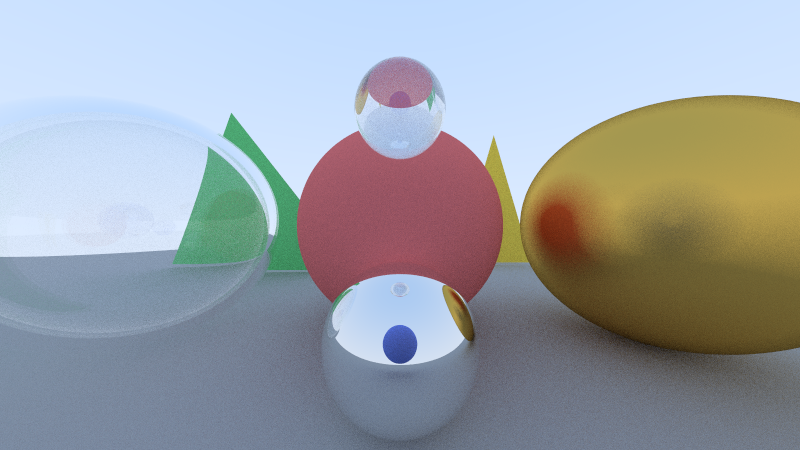
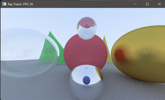

Languages: C, C++
This was a project to create a practical application with multithreading. CUDA (Compute Unified Device Architecture) is a software platform that has been used to greatly accelerate heavy processing tasks like artificial intelligence. This project took a conventional ray tracing program and used CUDA to vastly improve performance, providing a clear and interactive analogue for how this technology is used in other applications.
Compute Unified Device Architecure (CUDA) is a parallel computing platform developed by Nvidia. It allows supported Nvidia graphics cards (GPU) to perform general arithmetic tasks. While the CPU is designed for general tasks, it has a small number of cores for which it can perform operations. The GPU has thousands of cores, which CUDA unlocks for general tasks instead of just rendering computer graphics. One task can be split among thousands of cores at the same time, called parallel computing. When a program splits its processes among the cores like in this project, it is called multithreading. (Note: A similar technique exists called multiprocessing, though its details are beyond this explanation.)

This scene contains two lambertian triangles, 2 lambertian spheres (red & blue) 2 metal spheres (yellow & bottom reflective sphere), and 2 dielectric spheres (left-most & top sphere). Technically, the left-most sphere is actually two spheres to create a hollow centre.
The basic part of this program is based on Don Shirley's book Ray Tracing in One Weekend. In it, he creates a simple single-threaded ray tracing engine. This implementation runs on the CPU and uses only one processing core. It allows the user to add objects to a world and render an image. Three material types exist for objects: Lambertian, in which light reflects equally in all directions; metal, which reflects light like a mirror and has adjustable surface roughness; and dielectric, which acts like glass, reflecting some light while letting the rest through.
Don Shirley's book only includes spheres, but my project also implements triangles, a more relevant shape in terms of computer graphics (as triangles can be used to create polygons).
To render an image, the "camera" emits light rays for every pixel in the image. When encountering different materials, they may bounce, be absorbed, or pass through. When a ray bounces, it takes the colour of the material it hit. The ray tracing engine uses the colour of these rays to determine what colour each pixel in the output image should be.
Such a process is computationaly intensive. Each ray may bounce dozens or hundreds of times (depending on the hard-coded limit), and there may be hundreds of thousands of rays. Accordingly, the Shirley's single-threaded implementation takes around 12 seconds to calculate the image to the right.

The same scene with a moveable camera, rendered using CUDA. Frames per second are consistently around 30.
The first step to accelerating this program is CPU multithreading. This splits the task among all the CPU's cores instead of just one. Each core is assigned a section of the screen to render and they are all rendered simultaneously. This reduces the rendering time to about 4 seconds, for the same scene on the right.
Finally, taking advantage of the GPU's thousands of cores, the CUDA implementation brings the largest performance boost. Essentially, a new ray tracing engine had to be made to use CUDA-compatible data types. However, CUDA was able to render an image in around 65 ms, down from 4,000 ms for CPU multithreading and 12,000 ms for singlethreading. Such performance gains enable images to be rendered in real time, to form an interactive video. The same scene can be rendered at ~30 frames per second.
These dramatic performance improvements illustrate CUDA's usefulness in more intensive applications, like AI and simulations. In this program alone, CUDA improved render times by 18,000%. Likewise, CUDA could take an unfeasibly long process and reduce it to hours or minutes.
The ray tracing engine's performance is heavily reliant on hardware specs. Mines are as follows:
- i7-13620H (16 threads)
- RTX 4060 Mobile (3072 CUDA cores)
Performance will vary greatly with different hardware.